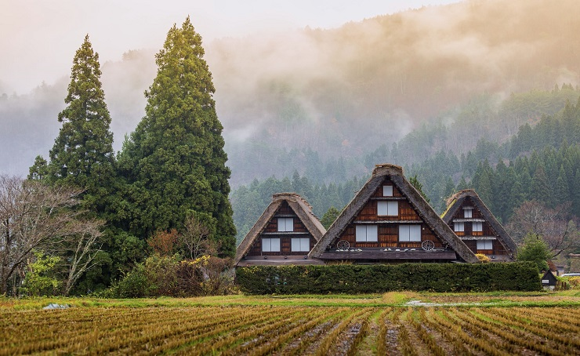

Shirakawa-go

Shirakawa-go, el pueblo del río blanco, es una aldea histórica situada en los alpes japoneses. Destaca por la arquitectura de sus casas construidas al estilo Gassho-zukuri con sus tejados de paja que parecen dos manos colocadas en posición de oración y que son útiles para soportar la gran cantidad de nieve de aquella zona.
Para llegar a Shirakawa-go tienes que coger un autobús en Takayama, que te dejará allí en poco más de una hora. El pueblo es muy pequeño y en unas 3 horas puedes visitarlo, aunque no debes olvidar subir al mirador, ya que las vistas desde allí son realmente increíbles. Eso sí, si lo haces con nieve, tienes que tener cuidado, ya que es un poco peligroso.